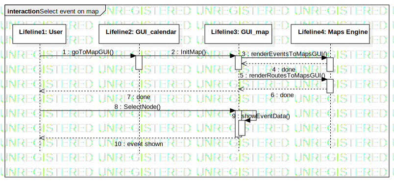

Interaction1
UMLInteraction
SmartCommute Architecture
::
Collaboration3
::
Interaction1
Description
none
Diagrams

Select event on map
Participants
Lifeline1: User
Lifeline2: GUI_calendar
Lifeline3: GUI_map
Lifeline4: Maps Engine
Messages
Message1 (Lifeline1→Lifeline2)
Message2 (Lifeline2→Lifeline3)
Message3 (Lifeline3→Lifeline4)
done (Lifeline4→Lifeline3)
Message4 (Lifeline3→Lifeline4)
done (Lifeline4→Lifeline3)
done (Lifeline3→Lifeline1)
Message5 (Lifeline1→Lifeline3)
Message6 (Lifeline3→Lifeline3)
event shown (Lifeline3→Lifeline1)
Properties
Name
Value
name
Interaction1
stereotype
null
visibility
public
isReentrant
true
Owned Elements
Select event on map